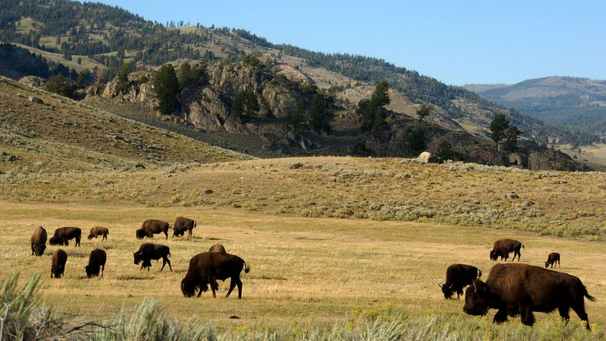

Where to have up-close encounters with exotic animals across AmericaThe United States beckons wildlife lovers with an array of places that allow close encounters with exotic animals. Discover incredible destinations nationwide, from sanctuaries to conservation hubs, offering immersive experiences with extraordinary wildlife. Here's a selection to consider. - San Diego Zoo, California - Yellowstone National Park, Wyoming - Everglades National Park, Florida - Safari West, California - Alaska Wildlife Conservation Center, Alaska - Busch Gardens, Florida - Monterey Bay Aquarium, California - The National Aviary, Pennsylvania 1. San Diego Zoo, California The San Diego Zoo is known for its diverse collection of 3,500+ animals of different species. The zoo allows you to step into replicated natural habitats, from lush rainforests to arid deserts. These immersive tours can offer insight into the worlds of pandas, elephants, koalas and many other animals. 2. Yellowstone National Park, Wyoming Yellowstone National Park offers unparalleled encounters with North American wildlife. Witness bison herds, grizzly bears, wolves and elk in their natural habitats against the backdrop of stunning geothermal features. 3. Everglades National Park, Florida Explore the Everglades' unique ecosystem, home to thriving alligators, manatees and diverse bird species. Visitors are able to book an airboat tour to venture through this expansive subtropical wilderness and delve into its unique wonders. 4. Safari West, California In California's wine country lies Safari West, offering an African safari adventure. Ride open-air vehicles across the savanna, observing giraffes, rhinos, zebras and other African wildlife in their natural habitats. 5. Alaska Wildlife Conservation Center, Alaska Located within stunning Alaskan landscapes, the Alaskan Wildlife Conservation Center aids injured or orphaned wildlife. Guests can get up-close views of grizzly bears, moose, musk oxen and other indigenous Alaskan animals. 6. Busch Gardens, Florida At Busch Gardens, excitement meets wildlife encounters. Visitors are able to get close to cheetahs, kangaroos and lemurs, all while also getting involved in educational programs and interactive exhibits within the theme park setting. 7. Monterey Bay Aquarium, California The Monterey Bay Aquarium in California allows individuals to explore the depths of the marine world with exhibits showcasing jellyfish, sea otters, sharks and a wide range of aquatic species. Emphasizing ocean conservation and education, it is a fascinating experience. 8. The National Aviary, Pennsylvania Discover a haven for birds from around the globe, including toucans, penguins and flamingos. Pennsylvania's National Aviary offers immersive experiences, allowing visitors to interact with these winged creatures. From coast to coast, these destinations invite travelers to witness and appreciate the beauty and diversity of wildlife. Whether exploring vast national parks or engaging with animals in curated settings, these experiences offer memorable encounters with the natural world. For more Lifestyle articles, visit www.foxnews.com/lifestyle. |
 |